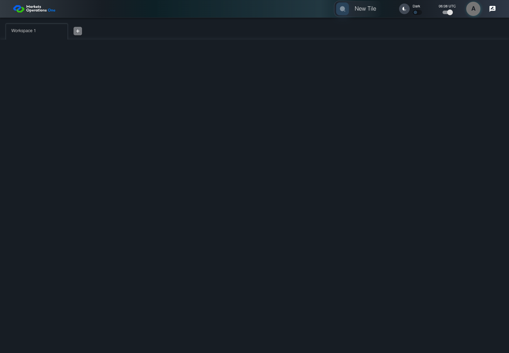
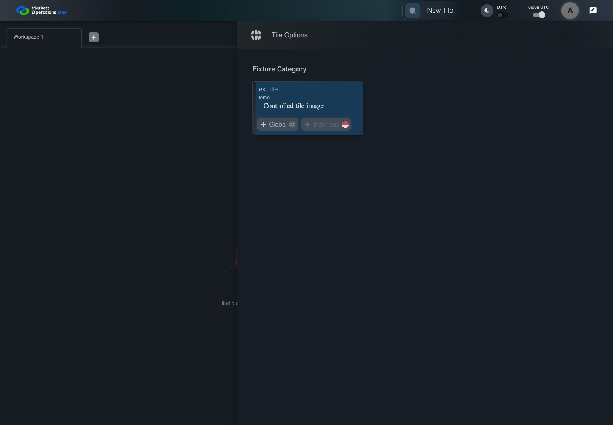

UI-CAT-014 disable only the unavailable entry
PASS · application/run-050/ui-cat-014-disable-only-the-unavailable-entry-92828ded92f4-attempt-1 · ACTUAL_APPLICATION_LOCAL_SERVICES
Actual current React shell. Controlled login, validation, and activity renewal responses supply UI-USER-01, catalog, and entities. A controlled SystemJS React container displays routes and parameters. Local fixture SVGs replace catalog images. Identity, entitlements, and business tenant behavior are not established.
2026-10-22T06:08:07.861Z to 2026-10-22T06:08:10.652Z
Assertions and result · Artifact manifest · Exact run inputs and source hashes
Result SHA-256:e938d3521566cd69939f14789d33ff5da0e0f0520505c48e0762421cf3cdfad7Screenshot capture: CAPTURED. Named frames: 6.
Step screenshot evidence: COMPLETE. 5/5 canonical steps have execution screenshots.
Canonical step timeline
Given User A is authenticated as fixture UI-USER-01 with the case-specific permissions
Execution: PASSED.
1. step-01 Visible state after step 1: Given User A is authenticated as fixture UI-USER-01 with the case-specific permissions
2026-10-22T06:08:09.630Z · 1440×1000
Step: /Users/lushevol/code/github/ratan-release-impact/workbench/tasks/ui-test-coverage-20261022/test-cases.md:6687
SHA-256:c5f8c07642533323c43513c0325447ed4ad63ef4bfaf5dca17ca035de3763f1fAnd T-GLOBAL is enabled and T-ID is disabled
Execution: PASSED.
2. step-02 Visible state after step 2: And T-GLOBAL is enabled and T-ID is disabled
2026-10-22T06:08:09.718Z · 1440×1000
Step: /Users/lushevol/code/github/ratan-release-impact/workbench/tasks/ui-test-coverage-20261022/test-cases.md:6688
SHA-256:c5f8c07642533323c43513c0325447ed4ad63ef4bfaf5dca17ca035de3763f1fWhen User A clicks section with text "New Tile" inside the shell application bar
Execution: PASSED.3. step-03 Visible state after step 3: When User A clicks section with text "New Tile" inside the shell application bar
2026-10-22T06:08:09.930Z · 1440×1000
Step: /Users/lushevol/code/github/ratan-release-impact/workbench/tasks/ui-test-coverage-20261022/test-cases.md:6689
SHA-256:11d5cafd8f9f68b6321317c84013b45b7d36c4f47e9166384952c510a8c796e8Then button named "Global" inside the section identified by title "Test Tile" and subtitle "Demo" is enabled
Execution: PASSED.
4. step-04 Visible state after step 4: Then button named "Global" inside the section identified by title "Test Tile" and subtitle "Demo" is enabled
2026-10-22T06:08:10.011Z · 1440×1000
Step: /Users/lushevol/code/github/ratan-release-impact/workbench/tasks/ui-test-coverage-20261022/test-cases.md:6690
SHA-256:11d5cafd8f9f68b6321317c84013b45b7d36c4f47e9166384952c510a8c796e8And button named "Indonesia" inside the section identified by title "Test Tile" and subtitle "Demo" is disabled
Execution: PASSED.
5. step-05 Visible state after step 5: And button named "Indonesia" inside the section identified by title "Test Tile" and subtitle "Demo" is disabled
2026-10-22T06:08:10.103Z · 1440×1000
Step: /Users/lushevol/code/github/ratan-release-impact/workbench/tasks/ui-test-coverage-20261022/test-cases.md:6691
SHA-256:11d5cafd8f9f68b6321317c84013b45b7d36c4f47e9166384952c510a8c796e8
Additional named frames

The final visible state after the named test assertions.
2026-10-22T06:08:10.266Z · 1440×1000Step: Test source: /Users/lushevol/code/github/ratan-release-impact/workbench/e2e/audit-specs/catalog-profile-expanded.spec.ts:178
SHA-256:
be01eedc29066a49860b58b38779b7d890bfaaf0c7f8c29a12d74293e5a530e0Screenshots establish visible state only. Assertions and traces support functional claims.